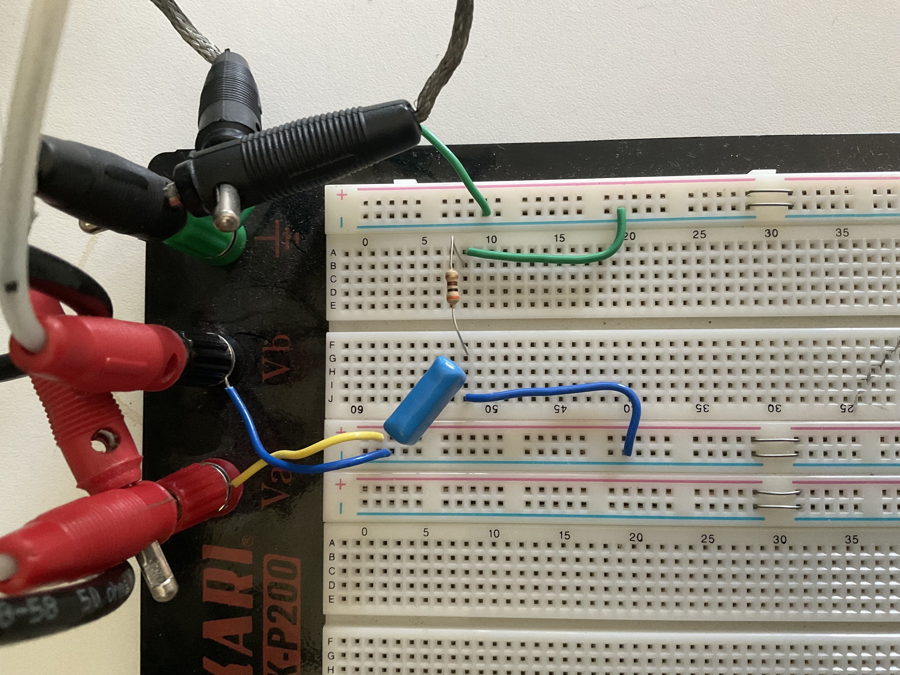

Experiment 1: RC filters¶
Métodos da Físcia Experimental I: (F540 2s2020)
Texto base: Daniel Ugarte, Antônio Riul Junior, Varlei Rodrigues
Adaptação Jupyter: Gustavo Wiederhecker
import sys
print(sys.executable)
print(sys.version)
/Library/Frameworks/Python.framework/Versions/3.7/bin/python3.7
3.7.9 (v3.7.9:13c94747c7, Aug 15 2020, 01:31:08)
[Clang 6.0 (clang-600.0.57)]
Loading python packages¶
The following python packages will be necessary to execute this notebook
#-----------------------------
#Pacote para manipular vetores e matrizes
import numpy as np
#-----------------------------
#Pacotes para lidar com unidades
from astropy import units as un
from astropy import constants as cte
#-----------------------------
#pacote para gráficos
import matplotlib.pyplot as plt
import matplotlib
#Comandos opcionais para formatar gráfico
font = {'family' : 'Arial',
'weight' : 'normal',
'size' : 12}
lines = {'linewidth' : 3.0}
figure = {'figsize' : [6.0, 6/1.6]}
matplotlib.rc('font', **font)
matplotlib.rc('lines', **lines)
matplotlib.rc('figure', **figure)
#-----------------------------
#pacote para desenhar circuitos
import SchemDraw as schem
import SchemDraw.elements as e
d = schem.Drawing(unit=2.5) # unit=2.5 determina o tamanho dos componentes
Neste experimento serão investigados circuitos contento um capacitor e um resistor. Estes circuitos nos permitem medir a corrente elétrica (resistor) ou a carga elétrica (capacitor) que fluem nos circuitos. A amplitude e a fase da corrente ou carga elétrica dependem da frequência. Esta dependência é que motiva e denominação desses circuitos como filtros de frequência, pois eles modificam como cada frequência é transmitida pelo mesmo. dos tipos passa-baixas ou passa-altas.
Para compreender este comportamento é fundamental revisar o conceito de resposta em frequência, ou seja, como a resposta de um dado sistema linear se comporta como função da frequência de excitação, portanto, é recomendado que o aluno revise o assunto no livro de sua preferência. O capítulo 2 do livro do Brophy (Eletrônica básica) é uma boa opção, ou mesmo um livro sobre equações diferenciais ordinárias. [eggleston2011basic]
Note
Objetivos:
Compreender as relações entre tensões e correntes senoidais em circuitos contendo resistores, capacitores e indutores.
Compreender como estes circuitos podem ser utilizados como filtros de sinais elétricos.
Determinar a resposta em frequência da amplitude e fase de filtros RC, RL e RLC; passa-baixas, passa-altas, passa-bandas, rejeita-bandas.
Descrever o comportamento de filtros através de gráficos de transmitância e fase em escala logarítmica (diagramas de Bode).
Frequency response of filters¶
Considere o diagrama do seguinte circuito elétrico:
d = schem.Drawing(unit=2.5)
d.add(e.DOT_OPEN, label ='$V_{in}$')
comp1 =d.add(e.RES, d='right',label='$R$') #capacitor
d.add(e.CAP, d='down',label='$C$') # resistor de saída
d.add(e.GND)
#output
d.add(e.LINE, d='right', xy=comp1.end, l=1)
d.add(e.DOT_OPEN,label ='$V_{out}$')
#---
d.draw()

Considere a imagem real do circuito
{kind=link}
Na tela do osciloscópio, teríamos algo como a figura Here is my figure caption!
{kind=link}
Phase-shifts (Deslocamento de fase)¶
Circuitos eletrônicos cuja resposta é função da frequência introduz uma fase no sinal de saída em relação ao sinal de entrada. Os filtros passa-baixa e passa-alta estudados são dois exemplos típicos. A figura abaixo ilustra o sinal de entrada (\(V_{in}\)) e saída (\(V_{out}\)) de um filtro passa-alta atuando em um sinal de baixa frequência. Notem que os sinais não estão em fase. O valor da defasagem \(\phi\) pode ser obtido medindo-se a diferença de tempo \(\Delta t\) entre os instantes que elas cruzam 0 Volts ou entre dois máximos das funções senoidais de entrada e saída e o período \(T\).
Teste (1)
Notem que a (1) permite-nos relacionar a medida no osciloscópio
t = np.linspace(0,2e-3,100) # vetor de tempo
f,ϕ1,ϕ2 = 1e3,0,np.pi/3 # frequencia e fase
v01,v02 = 1,0.8 # amplitudes
#----
v1 = v01*np.cos(2*np.pi*f*t+ϕ1) # sinal v1(t)
v2 = v02*np.cos(2*np.pi*f*t+ϕ2) # sinal v2(t)
plt.plot(t*1e3, v1, label =r'$V_1(t)$')
plt.plot(t*1e3, v2, label =r'$V_2(t)$')
#----
ϕ = ϕ2-ϕ1 # defasagem
T = 1/f # periodo dos sinais
dt = T*ϕ/(2*np.pi) # atraso temporal entre os sinais
#linhas verticais
plt.axvline(T*1e3,color='k',linestyle='--',linewidth=2.0)
plt.axvline((T-dt)*1e3,color='k',linestyle='--',linewidth=2.0)
#--------
#formatação do gráfico
plt.grid(True) # ativa grades
plt.legend(loc='best')
plt.xlabel('Tempo (ms)')
plt.ylabel('Amplitude (V)')
plt.title('Dois sinais com mesma frequência (1 kHz) e \n defasagem de $\phi={:1g}^\circ$'.format(180*ϕ/np.pi));
#plt.savefig('sinais_defasados.pdf')
Filtro passa-alta¶
O circuito abaixo ilustra um caso de filtro onde os sinais de baixa frequência têm suas amplitudes atenuadas, enquanto sinais de alta frequência são transmitidos quase sem atenuação. Monte o filtro passa-alta usando R = 200 \(\Omega\), C = 100 nF e R\(_L\) = 50 k\(\Omega\). Utiliza a gerador de sinais para analisar o comportamento de
e da fase \(\phi\) para a frequência de corte, a frequência uma década abaixo da frequência de corte e a frequência uma década acima da frequência de corte.
Utilizando o pylab adquira os valores de \(V_{in}\), frequência, \(V_{out}\) e \(\phi\) para uma faixa de valores de frequência. Use \(V_{in}\) = 2 Volts para a amplitude do sinal de entrada. No programa devem ser definidos os valores:
frequência inicial= 10 Hz
frequência final = 1 MHz
pontos = 50
Antes de utilizar 50 pontos, faça uma varredura com 10 pontos para certificar que está tudo correto.
d = schem.Drawing(unit=2.5)
d.add(e.GND) # terra
d.add(e.SOURCE_SIN, label='$V_{Th}$') # fonte
d.add(e.RES, d='right',label='$R_{Th}$')
d.add(e.DOT_OPEN)
diode1 =d.add(e.RES, d='right',label='$R$') #capacitor
d.add(e.CAP, d='down',label='$C$') # resistor de saída
d.add(e.GND)
#output
d.add(e.LINE, d='right', xy=diode1.end, l=1)
d.add(e.DOT_OPEN)
#---
d.draw()
#d.save('diode_res.pdf')
Preparação para o experimento¶
Demonstre a função de transferência (Ganho de tensão) para este circuito. Utilize as impedâncias complexas para isto.
Qual a frequência de corte do circuito?.
Como ele se comporta (impedância total e tensão de saída).
Com o mínimo de matemática, tente visualizar como a fase do sinal \(V_{out}\) se altera em relação à \(V_{in}\).
Qual efeito de \(R_{Th}\) na resposta do circuito? Ele altera a medida de \(V_{out}(f)\), \(V_{in}(f)\) e \(V_{out}(f)/V_{in}(f)\) ?
Aplicação do filtro passa-alta¶
Uma aplicação real muito importante de filtrs é eliminar uma componente indesejada de um sinal elétrico. Suponha um sinal que possui apenas duas frequências,
No domínio do tempo este sinal pode ser visualizado como é mostrado a seguir.
Como veremos, nosso gerador de funções BK-4052 pode gerar este tipo de sinal, porém ele representa as frequências do sinal utilizando o valor médio, $\(f_0=(f_1+f_2)/2,\)\( e a diferença de frequência, \)\(\delta f= f_1-f_2.\)$ Por isto, na sequência a seguir estes valores são calculados e mostrados. Faça esta mesma transformação quando quiser gerar seu sinal.
t = np.linspace(0,5e-3,500) # vetor de tempo
f1,f2= 1e3,0.5e3 # frequencia e fase
v01,v02 = 1,1 # amplitudes
print('f1 = {} Hz'.format(f1))
print('f2 = {} Hz'.format(f2))
print('f0 = (f1+f2)/2 = {} Hz'.format(0.5*(f1+f2)))
print('δf = (f1-f2) = {} Hz'.format(np.abs(f1-f2)))
#----
v1 = v01*np.cos(2*np.pi*f1*t) # sinal v1(t)
v2 = v02*np.cos(2*np.pi*f2*t) # sinal v2(t)
plt.plot(t*1e3, v1+v2, label= '$v(t)=v_1(t)+v_2(t)$')
#--------
#formatação do gráfico
plt.grid(True) # ativa grades
plt.legend(loc='best')
plt.xlabel('Tempo (ms)')
plt.ylabel('Amplitude (V)')
plt.title('Sinal composto por duas ondas senoidais. \n $f_1$={:1g} Hz e $f_2$={:1g} Hz'.format(f1,f2));
#plt.savefig('sinais_defasados.pdf')
f1 = 1000.0 Hz
f2 = 500.0 Hz
f0 = (f1+f2)/2 = 750.0 Hz
δf = (f1-f2) = 500.0 Hz
Exemplo de uma transformada de Fourier¶
De acordo com o teorema de Fourier, qualquer função periódica bem comportada pode ser representada por uma somatória de funções harmônicas. Considere uma função dependente do tempo \(t\) tal que \(F(t) = F(t+T)\), em que \(T\) e o período da função. \(F(t)\) pode ser escrita como: $\( F(t) = \cfrac{a_0}{2} + \displaystyle\sum_{n=1}^{\infty} \left(a_n \mathrm{cos}(n \omega_0 t) + b_n \mathrm{sen}(n \omega_0 t)\right)\)$
O exemplo abaixo mostra uma função \(F(t) = \sin(2\pi {\color{red}{60}} t) + \sin(2\pi {\color{red}{(2\times 10^3)}} t)\), gráfico superior, e a sua transformada de Fourier no gráfico inferior. Note os picos nos valores de \(\color{red}{60}\) e \(\color{red}{2\times 10^3}\) na transformada de Fourier.
Note que no nosso gerador de funções, é necessário utilizar a função de modulação para gerar os dois sinais simultaneamente:
Escolha a opção modulação;
calcule a frequência \(f_0,\delta f\) a partir das frequências dos sinais desejados;
A função a seguir foi definida para facilitar nosso cálculo da FFT.
def fft540(time,amp):
"""Função para calcular a FFT de um sinal.
Esta função é baseada no comando FFT no Numpy.
Arguments:
time {[float]} -- vetor de tempo
amp {[float]} -- vetor de amplitude
Returns:
[float] -- vetor de frequências
[complex float] -- vetor de amplitudes complexas
"""
#### fft ####
timestep = time[1]-time[0] # intervalo de amostragem = dt
n = len(amp)
fs = 1/timestep # frequencia de amostragem
#vetor de frequencias (positivas e negativas)
freq = np.fft.fftfreq(n, d=timestep)
#fft
yfft = np.fft.fft(amp)/n # fft computing and normalization
return freq, yfft
A seguir construímos os sinais mencionados anteriormente:
t = np.linspace(0,100e-3,int(1e5)) # vetor de tempo
f1,f2= 20,1e3 # frequencia e fase
v01,v02 = 1,1 # amplitudes
#----
v1 = v01*np.cos(2*np.pi*f1*t) # sinal v1(t)
v2 = v02*np.cos(2*np.pi*f2*t) # sinal v2(t)
v = v1+v2 # soma dos dois sinais
#----
print('f1 = {} Hz'.format(f1))
print('f2 = {} Hz'.format(f2))
print('f0 = (f1+f2)/2 = {} Hz'.format(0.5*(f1+f2)))
print('δf = (f1-f2) = {} Hz'.format(np.abs(f1-f2)))
#---- Calculando FFT
freq,Y = fft540(t,v)
### gráfico com 4 eixos###
fig, ax = plt.subplots(2, 2,figsize=[10,7])
#tempo
ax[0,0].plot(1e3*t,v)
ax[0,0].set_xlabel('Tempo (ms)')
ax[0,0].set_ylabel('Amplitude (V)')
#tempo com zoom
ax[1,0].plot(1e3*t,v)
ax[1,0].set_xlabel('Tempo (ms)')
ax[1,0].set_ylabel('Amplitude (V)')
ax[1,0].set_xlim([20,25])
ax[1,0].grid(True)
#fft linear - frequencias negativas e positivas
ax[0,1].plot(freq*1e-3, np.abs(Y),'r*-') # plotting the spectrum
ax[0,1].set_xlabel('Freq (kHz)')
ax[0,1].set_ylabel('|Y(freq)|')
ax[0,1].set_xlim([-5,5])
ax[0,1].grid(True)
#fft semilog - frequencias positivas
mask = range(0,int(len(t)/2)) # máscara para pegar apenas metade do vetor
freq_pos = freq[mask]
Y_pos = Y[mask]
ax[1,1].semilogx(freq_pos*1e-3, np.abs(Y_pos),'r') # plotting the spectrum
ax[1,1].set_xlabel('Freq (kHz)')
ax[1,1].set_ylabel('|Y(freq)|')
ax[1,1].set_xlim([1e-3,1e3])
ax[1,1].grid(True)
#ajustar e mostrar
plt.tight_layout()
plt.show()
f1 = 20 Hz
f2 = 1000.0 Hz
f0 = (f1+f2)/2 = 510.0 Hz
δf = (f1-f2) = 980.0 Hz
Itens para inlcuir no relatório¶
Propriedades do gerador de RF¶
Calcule a impedância que o gerador percebe ao se conectar o circuito passa-baixas no mesmo. Mostre em um gráfico como esta impedância varia como função da frequência (utilize
plt.semilogx)Com base na tensão medida no canal de entrada (\(V_1\)) e o circuito Thevenin da nosso gerador, determine a impedância Thevenin do gerador \(R_{Th}\)